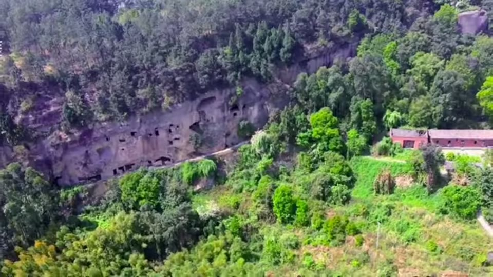
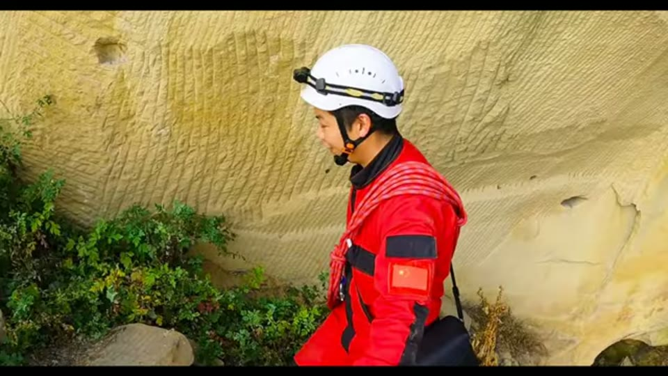
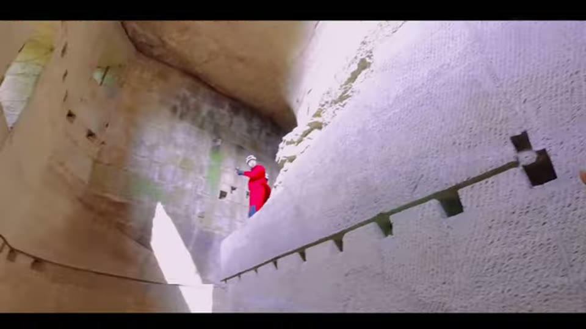
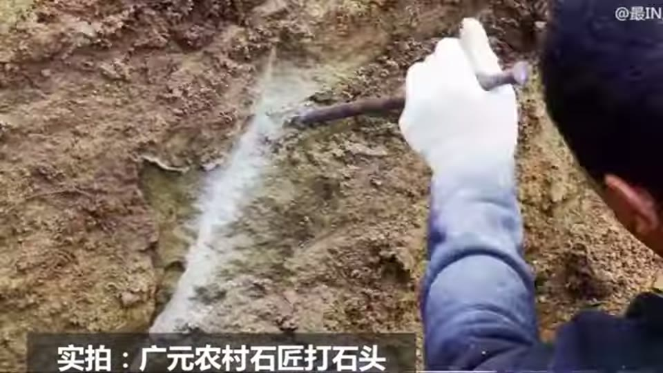
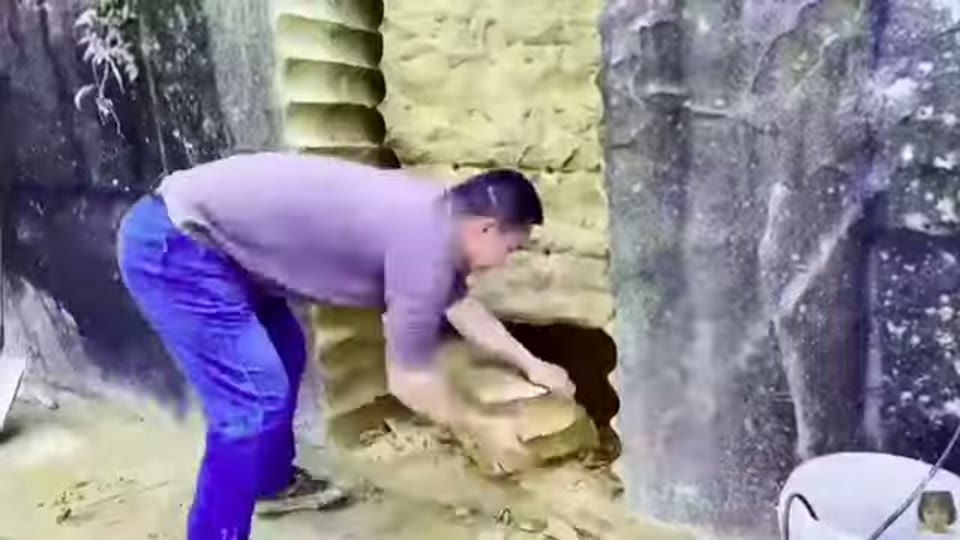

Curious Being
Ancient Chinese Stone Caves & Egyptian Quarry Share Similar Machine Marks
Tina · 17 min · watch on YouTube · summarised 2026-09-27
Cliffside cave dwellings cut into purple sandstone at Weiyuan, in Neijiang, central Sichuan — the county name appears on one of her comparison panels. There are no historical records of their origin; the local chronicle describes people building fortified mountain villages as refuges, most heavily around 1270 during the Mongol occupation, and possibly as far back as the Three Kingdoms period before 300 CE, when Zhuge Liang is recorded as having smelted iron in the area 00:13–03:12.
The caves sit 100 to 200 m above the ground on cliff faces, reached by climbing the right hill and finding a single narrow path, and they are hard to spot from a distance — which is the point of them 03:26–03:54. Inside they are substantial: multiple storeys, halls, corridors, stairs, storage, cisterns outside. The largest she describes has over ten chambers on three floors; its main floor is 21 m long, 6 m deep, with ceilings of 5 to 7 m, and covers over 800 m² 04:22–05:26.

The caves are cut into a cliff face well above the valley floor, which is what makes them hideable and what makes carrying tools and spoil up to them costly.
What interests her are the marks. They cover the interiors floor to ceiling, they are large and uniform, and in most areas the striations run almost perfectly parallel 05:33–06:01. She says they remind her of marks at ancient sites across Asia, the Middle East, Europe and Africa — the Longyou Caves in China, the Bazda Caves in Turkey, the Gebel el-Silsila quarry in Egypt.


The marks are large, uniform and near-parallel, and they cover every surface rather than being confined to working faces.
The method: three tools, tested in order
The video's structure is a comparison, and it is the reason the entry is worth having.
Chisels 06:17–08:37. She shows footage of an experienced stonemason working with hammer and chisel in the Sichuan basin itself. Her observations: even a seasoned mason finds it very hard to place striations parallel to each other in close proximity; some cave areas carry long horizontal marks, and it is not natural to chisel horizontally or to swing a pickaxe sideways. Then the question she keeps returning to — if these caves were hideouts, why dress them at all? There is no reason to spend labour producing finely aligned striations across every surface of a refuge.

Working stone by hand does not readily produce long parallel striations, which is the first of her two arguments against chisels.
A jackhammer 08:51–12:37. This is the strongest passage, and it is a natural experiment rather than an argument. A man known online as Mr Tiger, in the same city, cut a stone cave house into the same sandstone behind his family home, filmed the whole process and published it.
The numbers she draws out:
- A jackhammer delivers 1,100 to 1,800 blows per minute. A mason striking once a second manages 3 to 5% of that, with far less force per blow.
- With that advantage, Mr Tiger took about two years, not full time, working alone, to produce roughly 15 m² across two floors.
- The large ancient cave is 67 times bigger, and it is partway up a cliff, so everything and everyone had to be carried up.
- And his marks, despite real effort to space them evenly, are not as uniform or consistent as the ancient ones.
Her question follows from the numbers rather than from a theory: if a cave like that was cut by hand as a secret refuge, how many workers and how long — and would it still be secret?


A man with a jackhammer, in the same city and the same rock, took about two years to cut fifteen square metres, and his marks are still less regular than the ancient ones.
Hard rock excavators 13:15–14:46. Rotary drum cutters, mounted on excavators or on small demolition robots, in a range of sizes. The arms move up, down and sideways and can change the direction of a cut mid-pass. The marks they leave, she says, are consistent, uniform and layered — and it is this family of marks she finds closest to the ancient ones, in uniformity and in the scale of what was removed.

A rotary drum cutter leaves consistent layered parallel marks, and can change direction mid-cut, which she reads as the closest modern match.
Her conclusion
14:47–16:37 Chisels and handheld power tools cannot achieve that quality and consistency at that scale. Some smaller areas may have been dressed with something jackhammer-like, but such tools are not practical for excavating the big chambers — and a civilisation able to make a jackhammer would likely have larger machinery too. Since tool marks reach small details like window sills and door frames, and the caves are partway up a hill, she pictures compact, flexible, adaptable machinery.
Modern machines of that kind are less than 200 years old. Her closing question is whether an unknown advanced prehistoric civilisation had its own versions.
What you can check yourself
- Mr Tiger's videos are public, and so are the dimensions and the timespan. The comparison is the most checkable thing here: same city, same rock, documented work, a known tool.
- Jackhammer blow rates are manufacturer specifications.
- The parallel striations can be photographed and measured — spacing, width and length — which is what would turn a resemblance into a comparison.
- The cave dimensions are stated and could be checked against any survey of the site.
- The local chronicle is a real document and its account of Mongol-era fortified villages can be read.
- The calligraphy and writing inside the caves is mentioned as evidence they are not modern, and is a dating line anyone could follow further.
What the video does not settle
- The sandstone hardness claim is wrong as stated. She gives sandstone as 6 to 7 on the Mohs scale, "almost the same hardness of granite and steel". Mohs 7 is the hardness of quartz grains; a sandstone's workability depends on its cement, and many sandstones are cut with hand tools precisely because they are soft. This matters, because the difficulty of the chisel work is one of her two main arguments.
- The Mr Tiger comparison is not like for like, and the video does not say so. One man working part-time on a private project is being compared with what may have been an organised workforce. That does not remove the force of the 67× figure, but the labour estimate it implies is not derived.
- The drum-cutter resemblance is not measured. No spacing, width or depth comparison is made between the machine marks and the cave marks — only that both are layered and parallel.
- The other three sites are asserted, not analysed. Longyou, Bazda and Gebel el-Silsila are named as sharing the marks; none is examined in this video. The cross-continental claim rests on work done elsewhere.
- "No reason to dress a hideout" assumes the purpose. If the caves were not only refuges — and the largest, at 800 m² over three storeys with cisterns and window sills, is a considerable building — the argument from pointlessness weakens.
- Dating is left open and the marks are not dated at all. Nothing establishes that the marks are contemporary with the first excavation rather than later reworking.
- The chisel demonstration is not from where the caves are. The narration introduces it as filmed "in the Sichuan basin where the cave dwellings are located"; the clip's own burned-in caption names Guangyuan, which is in Sichuan but roughly 400 km from Neijiang. Different rock, different mason.
- The drum-cutter footage is manufacturer marketing, and the face being cut in it reads as compacted earth or soft sediment rather than the hard sandstone the argument concerns. The grooves it leaves are real; what they demonstrate about cutting hard rock is not shown.
- One striation frame is a different place. During the passage about "these cave dwellings" the video shows a very large chamber with pale grey-white walls, unlike the yellow sandstone in every other Weiyuan frame, and with a stepped ridge resembling published views of the Longyou Caves. It is not identified on screen and is recorded here as unidentified.
- Some proper nouns had to be recovered. The auto-transcript renders the county as "wayran", "veyron" and "variant"; the correct name, Weiyuan, is legible on a comparison panel at 12:30. The strategist is almost certainly Zhuge Liang and the Egyptian quarry Gebel el-Silsila, neither of which appears in writing on screen.